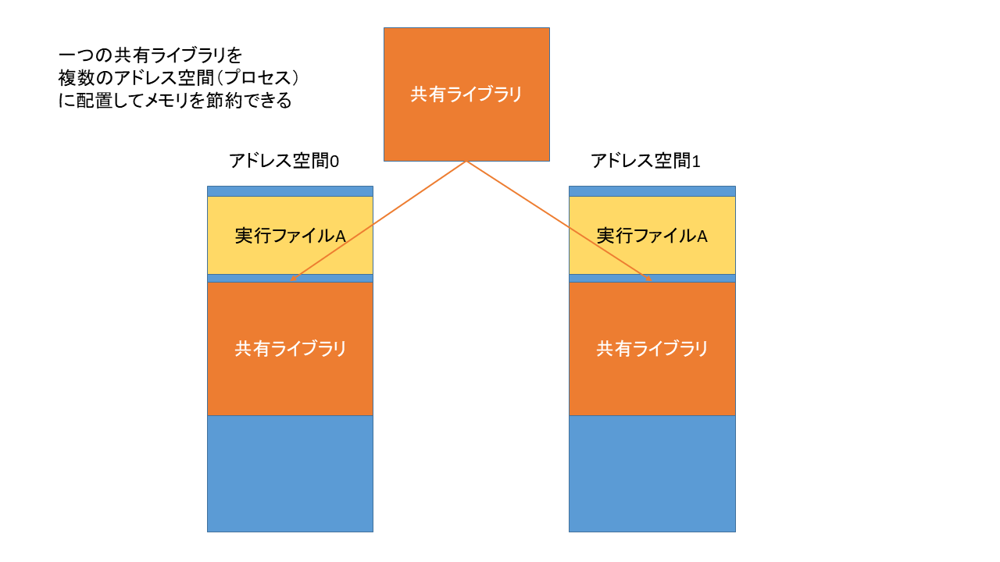
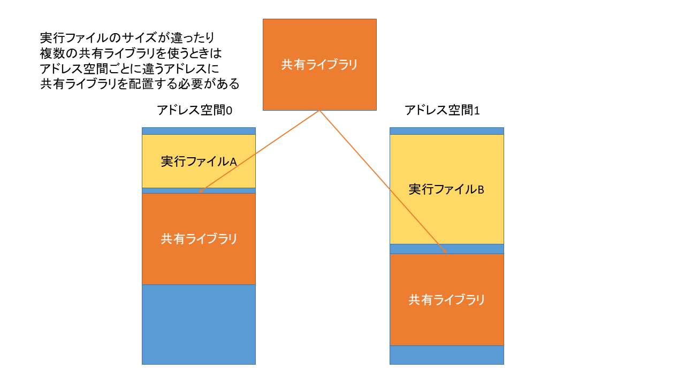
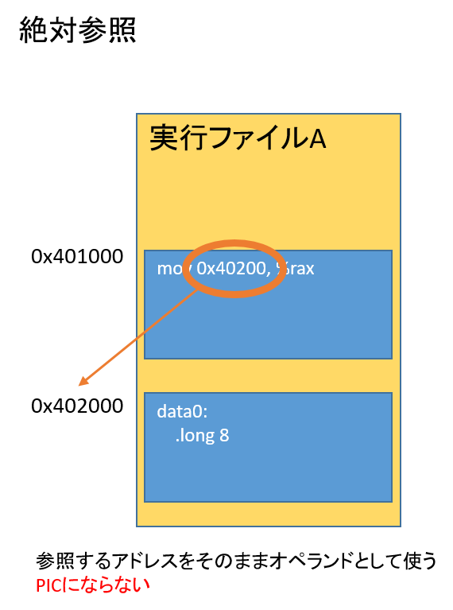
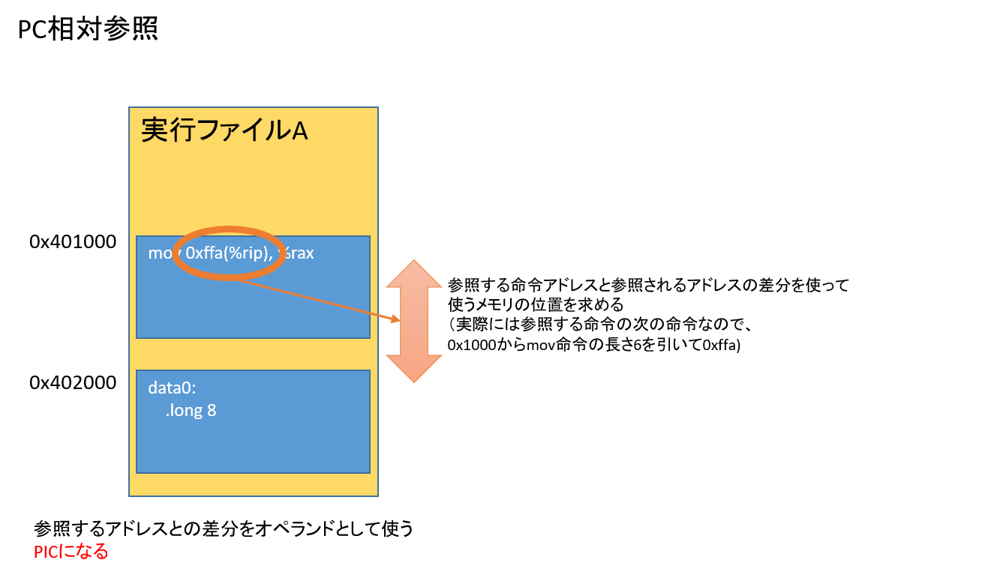
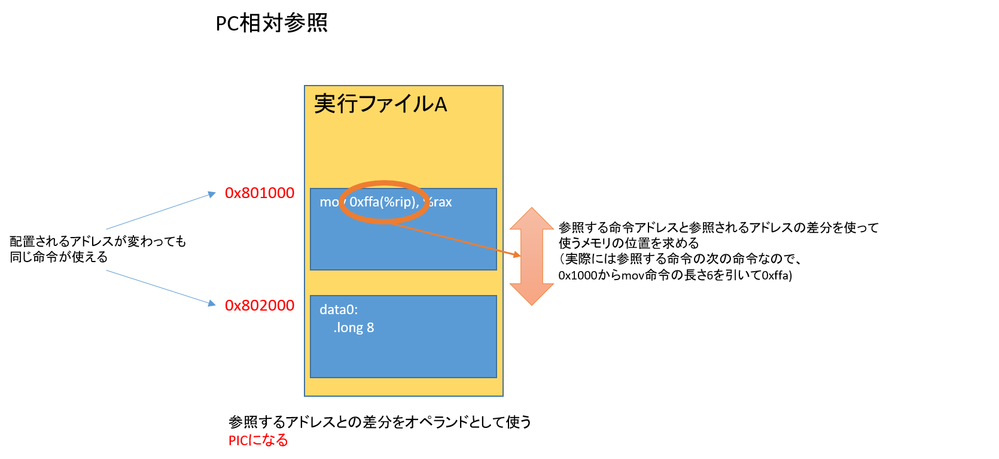
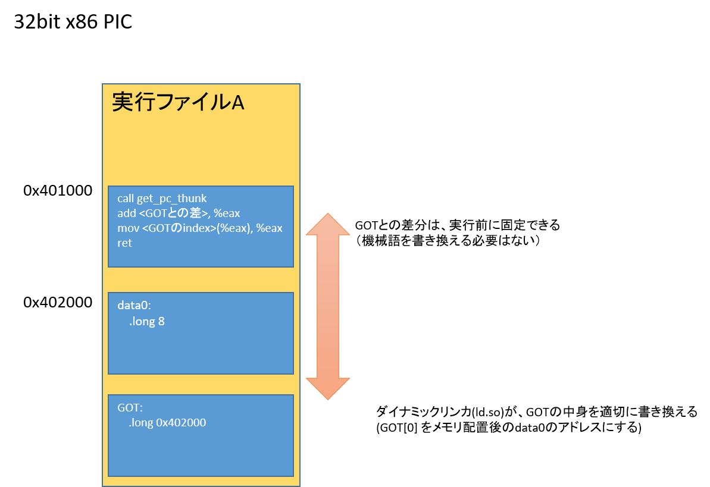

最後に、知っておくといい話題として、 昔からよく使われるPICと呼ばれるプログラムの形式について説明し、 メモリ破壊バグが引き置こすshellcodeの紹介、 それからPICを応用してshellcodeの問題を緩和する手法である ASLR について説明しておこう。
PIC (Position Independent Code:位置独立コード)とは、どんなアドレスに配置されても動作する機械語コードのことだ。
ここまで説明してきた機械語プログラムは、PICではなかった。例えば、次のELF実行ファイルを考えよう。
.globl _start .text _start: incl data0 mov $60, %rax syscall .data data0: .long 8
$ as -o no_pic.o no_pic.s $ ld no_pic.o $ objdump -d ./a.out ./a.out: file format elf64-x86-64 Disassembly of section .text: 0000000000401000 <_start>: 401000: ff 04 25 00 20 40 00 incl 0x402000 401007: 48 c7 c0 3c 00 00 00 mov $0x3c,%rax 40100e: 0f 05 syscall
次の行に注目してほしい
401000: ff 04 25 00 20 40 00 incl 0x402000
# 0x00402000 (注 : リトルエンディアン)
機械語の中に、data0 のアドレス、0x402000 が書き込まれているのが確認できるだろう。
当然だが、このプログラムは、data0 のアドレスが 0x402000 以外になると、正しく動かなくなる。これが、(PICではない)普通の実行ファイルに含まれた機械語だ。
そうではなく、何らかの方法を使って、プログラムの位置が変わっても同じように実行できるように作った機械語を PIC と呼ぶ。
PIC になると嬉しい点のうち、伝統的な嬉しい点は、共有ライブラリが実現しやすくなることだ。
共有ライブラリを使うと、複数の実行プロセスで同じメモリ上に配置された機械語、データを使えるようになり、使用メモリを減らすことができる。
しかし、これを実現するためには、単一の機械語を複数のアドレス空間に配置する必要が出てくる。共有ライブラリの中にある機械語は、実行時までアドレスが確定しないのだ。


このため、共有ライブラリを正しく動かそうとするなら、そこに含まれる機械語はどんなアドレスに配置されても正しく動くように作らないといけない、つまり PIC にする必要があるのだ。
C言語でプログラムを書いている場合、GCC なら -fpic か -fPIC オプションを付けるだけで PIC になる。(Microsoft Compilerの場合は /DYNAMICBASE)
-fpic と -fPIC では、CPUによってはサポートできるアドレス範囲が変わる。 x86では、どちらも変わらず、-fpic も -fPIC も同じ意味のオプションになる(なので、違いは気にしなくてよい)。
また、gcc では-fPICを付けると、純粋にPICになるわけではなく共有ライブラリ用のPICが生成されてしまうようだ。 以下では、説明のために -fpie を付けてコンパイルする。
PIE (Positon Independent Executable) は、位置独立な実行プログラムのことだ(= PICだが共有ライブラリではない)。
昔は、PICを必要とするのは共有ライブラリだけであった。 しかし、2005年頃に実行ファイルも実行されるごとに配置されるアドレスを変えたほうが セキュリティ上有利だということが判明し、実行ファイルもPICとしてビルドするのが一般的になっている。
PIEとセキュリティについては、あとで解説することにしよう。とりあえず、ここでは、「PIE = PICになった実行ファイル」と覚えておいてほしい。
次のプログラムをコンパイルし、何度か実行してほしい。
#include <stdio.h>
int a;
int main()
{
printf("aのアドレスは %lld\n", (long long)&a);
return 0;
}
$ ./a.out aのアドレスは 139872404770836 $ ./a.out aのアドレスは 139654091247636 $ ./a.out aのアドレスは 140209469526036 $ ./a.out aのアドレスは 140270456803348
古いLinuxを使っているのでなければ、実行するごとに変数のアドレスが変わっていることが確認できるはずだ。
このように、実行するごとに変数のアドレスを変えることを、 ASLR (Address Space Layout Randomization) と呼ぶ。 ASLR を有効にすると、スタック破壊などの攻撃の脅威を緩和でき、セキュリティ上少し有利になる。
ASLR についてもあとで解説するが、ここで見てほしいのは、変数 a のアドレスが変わってもプログラムが正しく動作していることだ。
どのようにしてこれを実現するか解説していこう。
PIC の実装は、基本的には全ての参照を PC相対参照 経由で参照することで実現される。 PC相対参照とは、参照するアドレスを(0からではなく)実行中のプログラムカウンタとの差分で表現される参照のことだ。
実行ファイルが配置される位置が変わったとしても、メモリを参照するプログラムと参照されるメモリが同じファイルに入っていて、 同時に配置されるなら、「"メモリを参照するプログラム"と"参照されるメモリ"の差」は、いつでも同じになる。



(この図には答えが書いてある。オペランドに addr(%rip) と書けばPC相対参照ができる)
x86_64 では、direct jmp と direct call は相対アドレスをオペランドに取ることを思い出そう。PC相対参照というのはまさにそれのことだ。 これはつまり、direct jmp、direct callは、何もしなくてもPICになっているのだ。
int main(int argc, char **argv)
{
volatile int a = 0;
if (argc == 1) {
goto label;
}
a++;
label:
return 0;
}
このプログラムを -pie, -no-pie でそれぞれコンパイルしてみよう。
$ gcc -static -no-pie jmp.c -o jmp-no-pie $ gcc -static -pie jmp.c -o jmp-pie $ cmp jmp-no-pie jmp-pie $ echo $? 0
全く同じ機械語が出力されるはずだ。(ビルド時タイムスタンプが保存される環境では同じにならないが)
次に、mov 命令などのようにデータとしてアドレスを参照する方法だが、 x86_64 では、PC相対参照がCPUの機能として実装してある。 複雑な作業は必要無く、大抵の命令はオペランドをPC相対になるように書きかえるだけでPC相対参照ができる。 (x86_64 では PC が rip レジスタなので、rip相対とも呼ばれることがある)
# 絶対参照
incl data0
# PC相対参照
incl data0(%rip)
最初のプログラムをpicにしてみよう。inc のオペランドをPC相対にするだけだ。
.globl _start .text _start: incl data0(%rip) mov $60, %rax syscall .data data0: .long 8
これでこの機械語 は PIC になった。
ただ、この時点では、機械語がPICになっただけで、実行ファイルがPIEになったわけではない。
実行ファイルをPIEにするには、機械語をPICにするのに加えて、さらに次の二点を変更する必要がある。
PIE は実装としては、共有ライブラリをロードする時の仕組みが再利用されており、共有ライブラリと同じような情報をELFに含める必要がある。詳細は共有オブジェクトのところで解説するとして使いかただけ説明しておこう。
-pie オプションは付けるだけでよい。-I オプションで指定する ld.so へのパスだが、これはディストリビューションごとに違っていたりするので、各自の環境にあわせて調べてほしい。動的リンクしたオブジェクトに対して readelf -l すればわかるはずだ。
$ readelf -l a.out
Elf file type is DYN (Shared object file)
Entry point 0x1f9
There are 6 program headers, starting at offset 64
Program Headers:
Type Offset VirtAddr PhysAddr
FileSiz MemSiz Flags Align
PHDR 0x0000000000000040 0x0000000000000040 0x0000000000000040
0x0000000000000150 0x0000000000000150 R 0x8
INTERP 0x0000000000000190 0x0000000000000190 0x0000000000000190
0x000000000000001c 0x000000000000001c R 0x1
[Requesting program interpreter: /lib64/ld-linux-x86-64.so.2] # ← これ
調べたら以下のようにビルドしよう
$ as pic.s -o pic.o $ ld -pie -I /lib64/ld-linux-x86-64.so.2 pic.o $ ./a.out
gdb を使って、実行ごとにアドレスが変わっていることを確認しよう。 gdbは、普通に起動すると、ASLRが無効になっているようだ。 実行するときは、ASLRが有効になるように、
(gdb) set disable-randomization off
としておこう。
$ gdb ./a.out GNU gdb (Ubuntu 8.1-0ubuntu3.2) 8.1.0.20180409-git Copyright (C) 2018 Free Software Foundation, Inc. License GPLv3+: GNU GPL version 3 or later <http://gnu.org/licenses/gpl.html> This is free software: you are free to change and redistribute it. There is NO WARRANTY, to the extent permitted by law. Type "show copying" and "show warranty" for details. This GDB was configured as "x86_64-linux-gnu". Type "show configuration" for configuration details. For bug reporting instructions, please see: <http://www.gnu.org/software/gdb/bugs/>. Find the GDB manual and other documentation resources online at: <http://www.gnu.org/software/gdb/documentation/>. For help, type "help". Type "apropos word" to search for commands related to "word"... Reading symbols from ./a.out...(no debugging symbols found)...done. (gdb) set disable-randomization off # gdbはデフォルトでaslrが無効になっているので有効にする (gdb) b _start Breakpoint 1 at 0x1f9 (gdb) run Starting program: /mnt/d/wsl/src/pllp/docs/pic_pie/a.out Breakpoint 1, 0x00007f654c2001f9 in _start () (gdb) x/4i $pc => 0x7f654c2001f9 <_start>: incl 0x200e01(%rip) # 0x7f654c401000 0x7f654c2001ff <_start+6>: mov $0x3c,%rax 0x7f654c200206 <_start+13>: syscall 0x7f654c200208: add %al,(%rax) (gdb) display /4i $pc 1: x/4i $pc => 0x7f654c2001f9 <_start>: incl 0x200e01(%rip) # 0x7f654c401000 0x7f654c2001ff <_start+6>: mov $0x3c,%rax 0x7f654c200206 <_start+13>: syscall 0x7f654c200208: add %al,(%rax) (gdb) run The program being debugged has been started already. Start it from the beginning? (y or n) y Starting program: /mnt/d/wsl/src/pllp/docs/pic_pie/a.out Breakpoint 1, 0x00007f48064001f9 in _start () 1: x/4i $pc => 0x7f48064001f9 <_start>: incl 0x200e01(%rip) # 0x7f4806601000 0x7f48064001ff <_start+6>: mov $0x3c,%rax 0x7f4806400206 <_start+13>: syscall 0x7f4806400208: add %al,(%rax) (gdb) run The program being debugged has been started already. Start it from the beginning? (y or n) y Starting program: /mnt/d/wsl/src/pllp/docs/pic_pie/a.out Breakpoint 1, 0x00007f07708001f9 in _start () 1: x/4i $pc => 0x7f07708001f9 <_start>: incl 0x200e01(%rip) # 0x7f0770a01000 0x7f07708001ff <_start+6>: mov $0x3c,%rax 0x7f0770800206 <_start+13>: syscall 0x7f0770800208: add %al,(%rax) (gdb)
_start のアドレスが毎回変わっていることを確認しよう。
上の例では確認していないが、incl が正しく動いていることも確認しておいてほしい。
x86_64 では、PC相対参照がCPUによりサポートされていた。
しかし、32bit の昔の x86 では、PC相対参照はCPUの機能として実装されていなかった。
PC相対参照がサポートされないCPUでどうやってPICを実装するのかについて簡単に説明しておこう。
次のプログラムを 32bit 用に PIE ありでコンパイルする。
int a;
int *p()
{
return &a;
}
$ gcc -m32 -pie x86_pic.c -O2 -c
(環境によって違いがあるかもしれないが)次のようなアセンブリが出力されるはずだ
$ objdump -dr x86_pic.o x86_pic.o: file format elf32-i386 Disassembly of section .text: 00000000 <p>: 0: e8 fc ff ff ff call 1 <p+0x1> 1: R_386_PC32 __x86.get_pc_thunk.ax 5: 05 01 00 00 00 add $0x1,%eax 6: R_386_GOTPC _GLOBAL_OFFSET_TABLE_ a: 8b 80 00 00 00 00 mov 0x0(%eax),%eax c: R_386_GOT32X a 10: c3 ret Disassembly of section .text.__x86.get_pc_thunk.ax: 00000000 <__x86.get_pc_thunk.ax>: 0: 8b 04 24 mov (%esp),%eax 3: c3 ret
思ったよりも複雑なコードになっていると思う。
特に最初のcall命令に注目しよう。何故グローバル変数のアドレスを取得するだけで、call命令が生成されるのか。
x86_64 では、PC相対参照があれば、PICの実装ができると説明した。これはつまり、今実行中のプログラムカウンタの位置を取得できれば、 PICは実装できるということだ。
32bit x86 では、プログラムカウンタを取得する方法として、call 命令を使っているのだ。
call命令の挙動を思い出そう。call命令は、
と、なっていた。つまり、call命令を実行すれば、1. の挙動から、実行中のプログラムカウンタが、メモリへ格納されるのだ。
また、2. にあるように 32bit でもジャンプアドレスはPC相対で参照される。つまり、call命令はそのままPICになる。
このふたつの挙動をあわせて、32bit x86 の PIC では、call命令を使ってPCを取得しているのだ。
5: 05 01 00 00 00 add $0x1,%eax 6: R_386_GOTPC _GLOBAL_OFFSET_TABLE_
続いてこの行だ。%eax には、get_pc_thunk.ax で取得したプログラムカウンタが入っていることを覚えておこう。
これは、今のプログラムカウンタと、GLOBAL_OFFSET_TABLE の相対位置を足すという命令だ。リロケーションの種類がR_386_GOTPCになっていることを確認しよう。このリロケーションを入れておくと、リンカがリンク時にオペランドに、この命令とGOTとの相対位置を入れてくれる。
今のプログラムカウンタの位置 + GOTへの相対アドレスが、eaxに入る、つまり、GOTの実行時の絶対アドレスがeaxに格納される。
GOT(Global Offset Table)は、ラベルの絶対アドレスが入ったテーブルだ。 この GOT の詳細は共有ライブラリのところで説明するが、簡単に書いておくと、 このGOTは、実行時にローダによって適切に設定されるテーブルで、PIEになってプログラムが配置されるアドレスが変わったとしても、 各ラベルの正しいアドレスが入っている。このGOTを見れば、実行時に配置されたラベル(今の場合はa)の絶対アドレスが取得できる。
a: 8b 80 00 00 00 00 mov 0x0(%eax),%eax c: R_386_GOT32X a
次にこのmov命令だ。これはGOTのエントリを参照している。
リロケーションの種類が R_386_GOT32X aになっていることを確認しよう。 これは、リンク時にGOTの中のエントリaのオフセットを入れてくれるリロケーションだ。 リンクが終われば、この部分がGOT中のaのエントリを指すオフセットになる。 つまりこの命令は、GOT中のラベル'a' という命令になっていて、無事「ラベル'a'のアドレスをレジスタeaxに入れる」ことができた。

以上、かけ足だが、32bit x86でのPICの実装方法について説明した。 このへんの事情は時代やOSによって変わるのと、最近のCPUはPC相対参照をサポートしていることが多いので、 まあ頑張って実装しているんだな、というぐらいに理解しておくとよいと思う。
(ここまで書いた)あとで書く
あとで書く